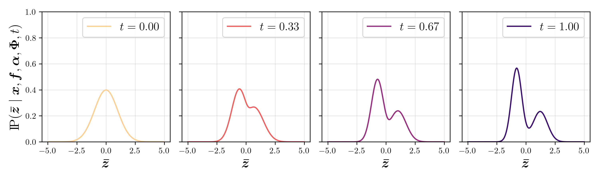
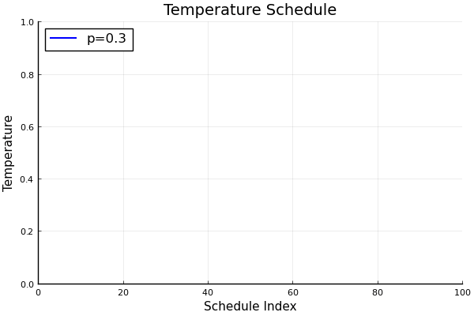
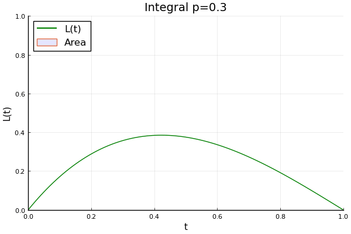
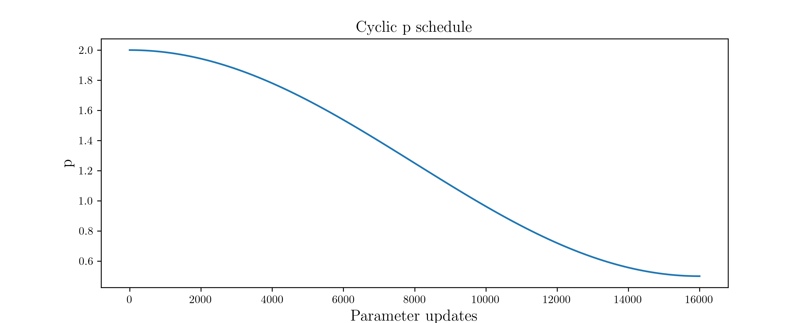

Question the default
Energy-based models mix poorly on multimodal posteriors. The literature defaults to diffusion to address it. I propose annealing instead!
Latent EBMs ( arXiv 2006.08205 ) generate by drawing samples from a learned prior, then decoding through a generator neural network. Training shapes that prior to be multimodal, (meaning several peaks or basins). Sampling it requires Langevin Monte Carlo (LMC), a gradient-based MCMC method that climbs in the direction of the score (the gradient of the log-density). The chain concentrates in whichever mode it initialises near and struggles to cross the low-density valleys between modes. This "poor mixing" biases the resulting samples.
Diffusion is the literature's fix. It works, but generation is no longer single forward pass and the interpretable prior gets spread across denoising. In KAEM I propose annealing instead, a training-only cost that leaves the prior intact.
Score matching
Yang Song's blog is the best resource for this, and is one of the inspirations for my own website! I'll summarise briefly here, in the context of EBMs ( arXiv 2101.03288 ):
For an EBM \(p_f(z) \propto \exp(f(z)) \), the score \(\nabla_z \log p_f(z) = \nabla_z f(z) \) is independent of the partition function \(Z_f\) (the normalising constant), which is typically intractable and motivates much of genAI research. Score matching sidesteps having to compute it:
\[ J_{\mathrm{SM}}(f) = \tfrac{1}{2}\, \mathbb{E}_{p_{\mathrm{data}}(z)} \!\left[\, \| \nabla_z \log p_f(z) - \nabla_z \log p_{\mathrm{data}}(z) \|^2 \,\right] \]
Integration by parts removes the data score (right-hand term), leaving an objective in \(f\) alone:
\[ J_{\mathrm{SM}}(f) = \mathbb{E}_{p_{\mathrm{data}}(z)} \!\left[\, \tfrac{1}{2} \| \nabla_z \log p_f(z) \|^2 + \mathrm{tr}\!\left(\nabla_z^2 \log p_f(z)\right) \,\right] \]
The Hessian trace \(\mathrm{tr}(\nabla_z^2 \log p_f(z))\) is the new pain: \(O(d^2)\) directly, \(O(d)\) with the Hutchinson estimator at the cost of variance. Denoising score matching skips it entirely by perturbing data with a Gaussian kernel \(q(\tilde z \mid z) = \mathcal{N}(\tilde z;\, z,\, \sigma^2 I)\).
Stack a discrete sequence of noise scales \(\sigma_1 < \cdots < \sigma_L\) and train a score net conditioned on \(\sigma\) ( arXiv 1907.05600 ), or parametrise as a discrete Markov chain \(z_0 \to z_1 \to \cdots \to z_T\), and you get DDPM ( arXiv 2006.11239 ). Both are discretisations of stochastic differential equations ( arXiv 2011.13456 ), i.e., in the continuum limit, \(T \to \infty \), we get the variance-preserving (VP) SDE for score-based models:
\[ dz_t = -\tfrac{1}{2}\beta(t)\, z_t\, dt + \sqrt{\beta(t)}\, dW_t, \]
where \(W_t\) is standard Brownian motion in \(\mathbb{R}^d\). The diffusion coefficient \(\sqrt{\beta(t)}\) is a scalar , so the noise covariance is \(\beta(t) I\). Equal variance in every direction, no preferred axis. This is what makes the SDE isotropic, and what makes it destroy structure. Rotational symmetry erases any anisotropy in \(p_f(z)\). Run it long enough and the marginal converges to \(\mathcal{N}(0, I)\). The score network learns to reverse the process, but the prior you started with is completely gone!
Diffusion as the literature's EBM mixing fix
In latent EBMs, \(p_{f,\Phi}(z \mid x) \propto p_\Phi(x \mid z)\, p_f(z)\) is typically sampled by Langevin Monte Carlo, which moves in the gradient direction of \(\log p_{f,\Phi}(z \mid x)\). It therefore fails on multimodal distributions, (the default case in genAI), since it gets trapped in local modes as it climbs:
Prior work in EBM sampling literature removes the basins with noise rather than annealing. The diffusion-assisted EBM (DA-EBM, arXiv 2304.10707 ) trains a single EBM alongside diffused copies of the data. The hierarchical EBM ( arXiv 2405.13910 ) stacks the latent space top-down and runs a diffusion scheme over the multi-layer prior.
Gaussian noise of growing variance \(\sigma^2\) smoothens the density. At high \(\sigma\) the modes merge and a single smooth peak becomes easy to sample, but DA-EBM only adds a few such levels, not the full diffusion to \(\mathcal{N}(0, I)\) that DDPM runs. Generation runs backwards. Each step samples a conditional \(p(z_t \mid z_{t+1})\) peaked near the previous sample, so mixing improves (recovery likelihood, arXiv 2012.08125 ).
It works really well, but the cost is that generation is no longer single-pass. The prior is now a chain of conditional EBMs, walked back through sequentially at inference, so its structure is spread across the reverse steps. Not something that's easy to interpret.
Thermodynamic integration (KAEM's method)
This is the method I proposed for KAEM's training. A power posterior interpolates between prior and posterior across \(t \in [0, 1]\):
\[ p_{f,\Phi}(z \mid x, t) = \frac{p_\Phi(x \mid z)^t\, p_f(z)}{Z_t}, \qquad Z_t = \mathbb{E}_{p_f(z)}\!\left[ p_\Phi(x \mid z)^t \right]. \]
\(t = 0\) is the prior, \(t = 1\) is the posterior. In between, the likelihood gets raised to a fractional power, flattening the posterior into something easier for Langevin to mix on. A Gaussian prior smoothly sculpts into a bimodal target as \(t\) increases:

The trick is in \(\log Z_t\). Differentiate it in \(t\), using the chain rule on \(p_\Phi(x \mid z)^t\):
\[ \frac{\partial}{\partial t} \log Z_t \;=\; \frac{1}{Z_t} \frac{\partial}{\partial t} Z_t \;=\; \frac{1}{Z_t}\, \mathbb{E}_{p_f(z)}\! \left[ \log p_\Phi(x \mid z)\, p_\Phi(x \mid z)^t \right]. \]
The \(p_\Phi(x \mid z)^t / Z_t\) factor is exactly the power posterior \(p_{f,\Phi}(z \mid x, t)\), so the prior-weighted expectation collapses into a power-posterior-weighted one:
\[ \frac{\partial}{\partial t} \log Z_t = \mathbb{E}_{p_{f,\Phi}(z \mid x, t)} \!\left[ \log p_\Phi(x \mid z) \right]. \]
Integrate both sides from 0 to 1. The fundamental theorem of calculus gives:
\[ \log Z_1 - \log Z_0 = \int_0^1 \mathbb{E}_{p_{f,\Phi}(z \mid x, t)}\!\left[ \log p_\Phi(x \mid z) \right] dt. \]
The boundaries collapse:
- At \(t = 0\): \(Z_0 = \mathbb{E}_{p_f(z)}[p_\Phi(x \mid z)^0] = 1\), so \(\log Z_0 = 0\).
- At \(t = 1\): \(Z_1 = \mathbb{E}_{p_f(z)}[p_\Phi(x \mid z)] = p_{f,\Phi}(x)\), so \(\log Z_1 = \log p_{f,\Phi}(x)\).
The log-marginal likelihood is now a 1D integral:
\[ \log p_{f,\Phi}(x) = \int_0^1 \mathbb{E}_{p_{f,\Phi}(z \mid x, t)} \!\left[ \log p_\Phi(x \mid z) \right] dt. \]
A continuum of expectations replaces a single hard one. In return you get tractability on multimodal posterior sampling after we discretise the integral. High-\(t\) chains explore the global landscape, low-\(t\) chains resolve detail, and Replica Exchange Monte Carlo enables swaps between them!
Discretising the integral
How do you do integration computationally? Well, think back to schoolboy integration , where you summed up areas under a curve! Discretise the temperature axis as \(\{t_0, t_1, \dots, t_{N_t}\} \subset [0, 1]\). Then trapezoidal rule:
\[ \log p_{f,\Phi}(x) \approx \tfrac{1}{2} \sum_{k=1}^{N_t} \Delta t_k\, (E_{k-1} + E_k), \quad E_k = \mathbb{E}_{p_{f,\Phi}(z \mid x, t_k)}\!\left[ \log p_\Phi(x \mid z) \right], \]
which has bias \(O(\Delta t_k^2)\). The schedule itself can be chosen using a power law:
\[ t_k = \left( \frac{k}{N_t} \right)^p, \quad k = 0, 1, \dots, N_t. \]
- \(p = 1\): uniform spacing, what you guys are all used to, schoolboy integration!
- \(p > 1\): clusters \(t_k\) near 0, more resolution at the prior end.
- \(p < 1\): the reverse.


Choosing \(p\) for KAEM
Calderhead & Girolami derived an analytic optimal schedule for linear regression. KAEM is not linear regression, so the analytic result doesn't carry over. I anneal \(p\) during training instead, with a cosine schedule borrowed from cyclical KL annealing for VAEs ( arXiv 1903.10145 ):
\[ p(i) = p_{\text{start}} + (p_{\text{end}} - p_{\text{start}}) \cdot \tfrac{1}{2}\!\left(1 - \cos\!\left(2\pi \left(N_{\text{cycles}} + \tfrac{1}{2}\right) \cdot \frac{i - 1}{N_{\text{updates}}}\right)\right), \]
where \(i\) is the current parameter update. I set \(p_{\text{start}} = 2\), \(p_{\text{end}} = 0.5\), \(N_{\text{cycles}} = 0\) for a single monotonic transition from 2 to 0.5 over training:

The logic is two-phase:
- early training, \(p > 1\). Bins cluster near \(t = 0\). Chains spend more time on smoother power posteriors (closer to the prior), where global features emerge with small KL between adjacent temperatures.
- late training, \(p < 1\). Bins shift toward \(t = 1\). Chains now spend more time near the true posterior, sharpening high-variance, data-informed detail.
Coarse global features first, fine local detail last. Annealing the annealing itself XD
Why thermo over diffusion for KAEM
- prior preserved - KAEM's per-dimension 1D densities stay plottable and interpretable. Diffusion-assisted EBMs scatter the prior across denoising
- training-only cost - \(N_t\) chains run solely during training, generation is unchanged and remains a single forward pass. Diffusion pays its cost every generation and scales sequentially with \( N \) denoising steps
- parallel in temperature - power posteriors decouple and \(N_t\) chains run concurrently with deterministic even-odd swaps ( arXiv 1905.02939 ). Compute scales with VRAM, not wall time. Remember from the SciML page : You want to be greedy with your hardware usage, not with your time spent.
- no surrogate objective - thermo targets \(\log p_{f,\Phi}(x)\) directly. Fisher divergence and DSM are different objects.
All derivations, the steppingstone-estimator equivalence, and bias correction via KL between adjacent power posteriors can be found in greater detail in the paper ( arXiv 2506.14167 ).
Parallel Tempering
github ↗